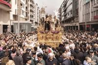
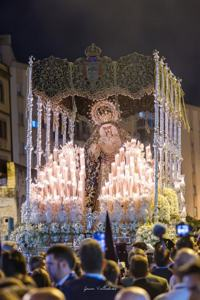
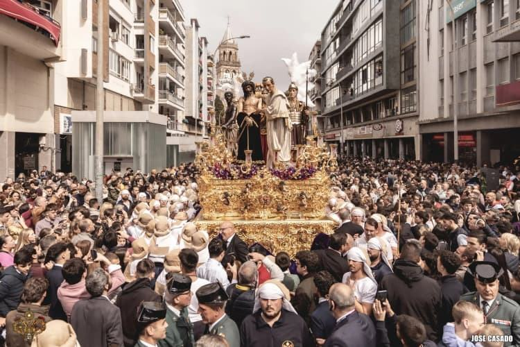
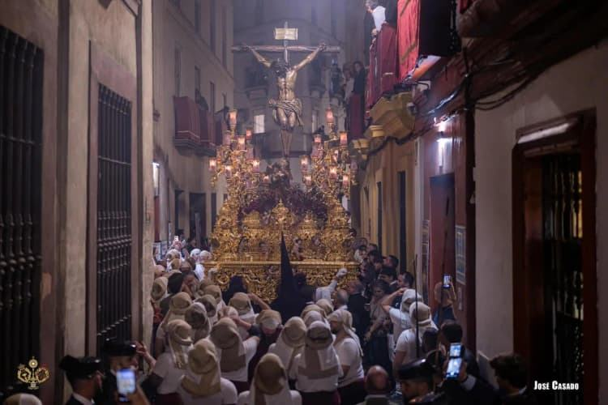

![]()
San Benito
La Calzada · Sevilla
Lo esencial
Su Martes Santo
Horario de 2026 · faltan — días para el próximo Martes Santo
Sigue el programa
Capítulos
Su cortejo
3 pasos · 4 bandas- ✝AbreCruz de guíaA. M. Juvenil Sagrada Presentación
- Nazarenos · túnica blanca, antifaz morado

1 · MisterioSagrada PresentaciónCastillo Lastrucci, 1928 · La Encarnación- Nazarenos
- 2 · CristoCristo de la SangreFrancisco Buiza, 1966 · Sangre de San Benito
- Nazarenos

3 · PalioVirgen de la EncarnaciónBlas Molner, s. XVIII · La Puebla del Río
- JGCapataz · misterioJuan Antonio Gil García
- MRCapataz · CristoManuel Roldán Rojas
- JMCapataz · palioJesús Morón Hortal
- LGVestidor · VirgenLeandro González Ruiz
Sus bandas
Martes Santo 2026- Cruz de guíaA. M. Juvenil Sagrada PresentaciónDe la hermandad
- MisterioA. M. La EncarnaciónDe la hermandad
- CristoCC. TT. Sangre de San BenitoDe la hermandad
- PalioBanda Municipal de La Puebla del Ríodesde 2001
Pasos e imágenes
desliza →
1 · MisterioSagrada Presentación de Jesús al Pueblo
Jesús Presentado al PuebloAntonio Castillo Lastrucci · 1928Figuras secundarias · aún sin cargar- Capataz
- Juan Antonio Gil García
- Paso
- Barroco rocalla · 1967–1968
- Música
- A. M. La Encarnación

2 · CristoSantísimo Cristo de la Sangre
Cristo de la SangreFrancisco Buiza · 1966- Capataz
- Manuel Roldán Rojas
- Paso
- Barroco · 1967–1969
- Música
- Sangre de San Benito
- 3 · Palio
Nuestra Señora de la Encarnación Coronada
Virgen de la EncarnaciónBlas Molner · 1780–1793- Capataz
- Jesús Morón Hortal
- Vestidor
- Leandro González Ruiz
- Paso
- Barroco · palio de 1930–1931
- Música
- B. M. La Puebla del Río
Su Martes Santo
8 hermandades- El Cerro del ÁguilaDesamparo y Abandono · Dolores11:40
- San BenitoPresentación · Sangre · Encarnación16:00
- BDulce Nombre · La BofetáJesús ante Anás · Dulce Nombre
- La CandelariaSalud · Candelaria
- San EstebanSalud y Buen Viaje · Desamparados
- Los JavieresAlmas · Gracia y Amparo
- Los EstudiantesBuena Muerte · Angustia
- Santa CruzMisericordias · Dolores
Provisional: la base aún no guarda el orden de paso ni las horas de 6 de las 8 hermandades. Este orden sale de prensa (2025) y hay que confirmarlo antes de cargarlo.
Horario16:00 – 02:05
Horario de 2026. Se actualiza cuando se publica el de cada año.
Recorrido28 calles
- San Benito
- Luis Montoto
- Puerta de Carmona
- Santiago
- Imagen · Laraña
- Lasso de la Vega · Duque
- Carrera Oficial
- Catedral
- Placentines · Francos
- Cuesta del Rosario
- Alfalfa · Plaza de Pilatos
- San Esteban · Puerta de Carmona
- San Benito
Ver todas las calles
San Benito, Luis Montoto, Puerta de Carmona, Muro de los Navarros, Santiago, Almirante Apodaca, Imagen, Laraña, Orfila, Lasso de la Vega, Duque, Carrera Oficial, Catedral, Alemanes, Álvarez Quintero, Argote de Molina, Placentines, Francos, Cuesta del Rosario, Luchana, Cristo de las Tres Caídas, Alfalfa, Águilas, Plaza de Pilatos, San Esteban, Puerta de Carmona, Luis Montoto y San Benito.
Túnica blanca y morado
Hábito de nazareno
- Túnica
- Túnica y capa blancas
- Antifaz
- Terciopelo morado
- Cíngulo
- Morado, a la izquierda
- Botones
- Terciopelo morado
- Escudo
- En antifaz y capa
- Calzado
- Zapato negro con hebilla
Nazarenossin dato
La base ya guarda estas cifras, año a año y con fuente, para 31 cortejos. Para San Benito todavía no hay ninguna.
Titulares4
Cultos7 al año
- EneTriduo y Función a la Encarnación
- Cuar.Quinario y Función PrincipalPrimera semana de Cuaresma
- MarVía Crucis · Anunciación25 de marzo
- S.S.Estación de penitenciaMartes Santo · 16:00
- OctTriduo al Santísimo Sacramento
Patrimonioestrenos y restauraciones
Estrenos 8
- 2018Parihuela y dorado actualPaso de misterio · renovación
- 2003Apostolado de los respiraderosPaso de misterio · escultura
- 1987LlamadorPaso de misterio · orfebrería
- 1983Faldones actualesPaso de misterio · bordado
- 1968Canastilla y respiraderosPaso de misterio · programa escultórico
- 1967Diseño, talla y doradoPaso de misterio · ejecución original
- 1966Cristo de la SangreFrancisco Buiza · bendecido ese año
- 1930Palio de la EncarnaciónPaso de palio · 1930–1931
Restauraciones 5
- 2000Cristo de la SangreJuan Manuel Miñarro
- 1988Jesús Presentado al PuebloJosé Rodríguez Rivero-Carrera
- 1949Jesús Presentado al PuebloAntonio Castillo Lastrucci, su autor
- 1917Virgen de la EncarnaciónJosé Ordóñez
- 1819Virgen de la Encarnaciónautor sin documentar
Estrenos: fases del paso de misterio, la fecha del palio y la bendición del Cristo. El resto de pasos aún no tiene sus fases cargadas.
Patrimonio musical95 obras
- Agrupación musical 37
- Banda de música 27
- Cornetas y tambores 22
- Coplas 7
- Cultos 2
Para escuchar
- ▶Nuestra Señora de la EncarnaciónPedro Braña Martínez · 1971Spotify
- ▶CoronaciónEliseo Capel Paricio · 1994Spotify
- ▶Sangre de mi SangreC. y J. Jiménez Cabeza · 2014Spotify
- ▶En las tinieblas de mis dudasCristóbal López Gándara · 2026YouTube
Acompañamientos históricosdesde 1993
- Sangre de San BenitoCruz de guía 1993–1996 · Cristo desde 199734 años
- La EncarnaciónCristo 1993–1994 · Misterio desde 199534 años
- Banda Municipal de La Puebla del RíoPalio desde 200126 años
- Juvenil Sagrada PresentaciónCruz de guía desde 20243 años
- PPPresentación al Pueblo (Dos Hermanas)Cristo 1995–19962 años
Vía Crucis de las Cofradías1991
Historiadesde 1554
Fundada en Triana en 1554, la Hermandad llegó a La Calzada tras perder su capilla trianera y, desde 1921, hace estación de penitencia cada Martes Santo. Su cofradía de tres pasos quedó completa en 1966 con el Cristo de la Sangre de Buiza. Es también sacramental desde 1958.
- 1554 Reglas aprobadas el 18 de julio, en Triana
- 1845 Primera estación de penitencia a la Catedral
- 1875 La Virgen de la Encarnación llega a San Benito
- 1921 Nuevas reglas: sede en La Calzada y salida el Martes Santo
- 1928 Estreno del misterio, con el Señor de Castillo Lastrucci
- 1930 La Encarnación vuelve al cortejo
- 1958 Adquiere carácter sacramental
- 1966 Cristo de la Sangre de Buiza · títulos de Pontificia y Archicofradía
- 1991 El Cristo de la Sangre preside el Vía Crucis de las Cofradías
- 1994 Coronación canónica de la Encarnación
- 1998 San Benito Abad, nuevo titular
DatosFundada en 1554
- Carácter
- Penitencia y sacramental
- Títulos
- Pontificia y Real Archicofradía
- Colores
- Redes
Curiosidades
desliza →- 291años hasta la CatedralNació en 1554, pero su primera estación a la Catedral no llegó hasta 1845.
- 3 de 4bandas de la casaLa Juvenil, La Encarnación y Sangre de San Benito pertenecen a la propia hermandad.
- 25·IIICoronada en su díaLa coronación de la Encarnación se proclamó el 25 de marzo de 1994, fiesta de la Encarnación.
- 1951Su primera marcha«Jesús ante el Pueblo», de Manuel Mejías, es la más antigua de las 95 obras que tiene dedicadas.
Sacadas de datos ya publicados en Hilo. La base no tiene aún un campo propio de curiosidades.
Todo lo que sale de San Benito
- Titulares
- Pasos
- Bandas
- Autores
- Capataces y vestidor
- Su Martes Santo
Maqueta con datos reales de Hilo Cofrade · horario e itinerario de 2026. Lo marcado como «provisional» o «sin dato» no está aún en la base.